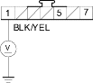
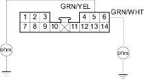

- Check the No. 14 (10A) fuse in the under-dash fuse/relay box.
Is the fuse OK?
YES - Go to step 2.
NO - Replace the fuse and recheck. 
- Disconnect the recirculation control motor 7P connector.
- Turn the ignition switch ON (II).
- Measure the voltage between the No. 1 terminal of the recirculation control motor 7P connector and body ground.
RECIRCULATION CONTROL MOTOR 7P CONNECTOR

Wire side of female terminals
Is there battery voltage?
YES - Go to step 5.
NO - Repair open in the wire between the No. 14 fuse in the under-dash fuse/relay box and the recirculation control motor.
- Turn the ignition switch OFF.
- Test the recirculation control motor (see page 21-48).
Is the recirculation control motor OK?
YES - Go to step 7.
NO - Go to step 12.
- Disconnect climate control unit connector A (14P).
- Check for continuity between the No. 5 and No. 6 terminals of climate control unit connector A (14P) and body ground individually.
CLIMATE CONTROL UNIT CONNECTOR A (14P)

Wire side of female terminals
Is there continuity?
YES - Repair any short to body ground in the wire(s) between the climate control unit and the recirculation control motor.
NO - Go to step 9.
- Turn the ignition switch ON (II) and check the same wires for voltage.
CLIMATE CONTROL UNIT CONNECTOR A (14P)

Wire side of female terminals
Is there any voltage?
YES - Repair any short to power in the wire(s) between the climate control unit and the recirculation control motor. This short also damages the climate control unit. Repair the short to power before replacing the climate control unit.
NO - Go to step 10.